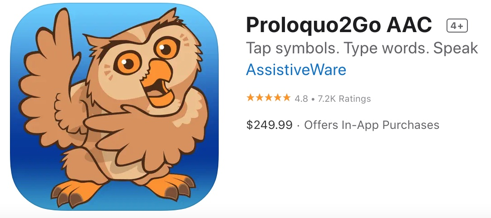
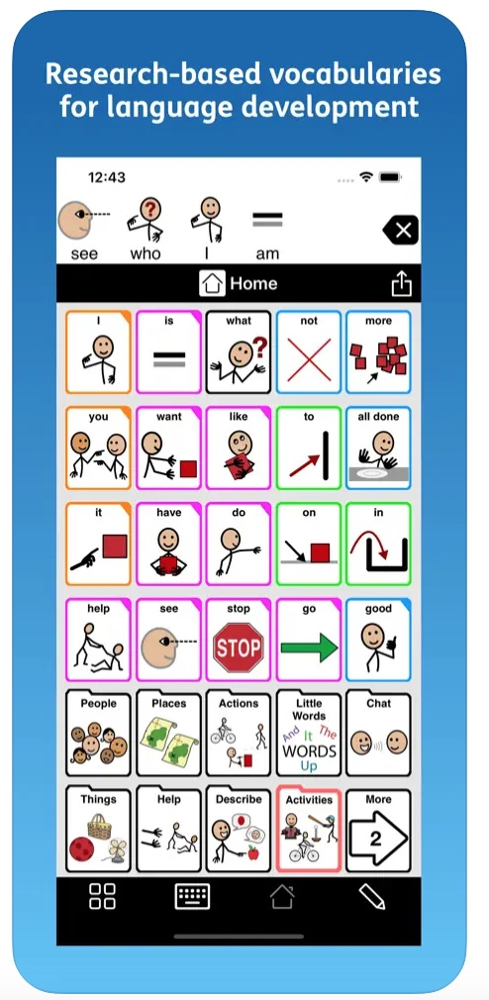
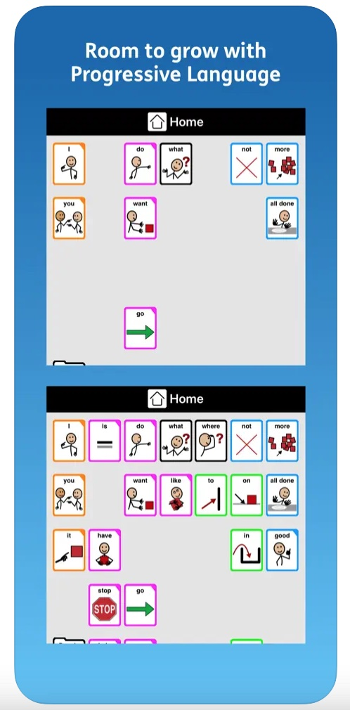
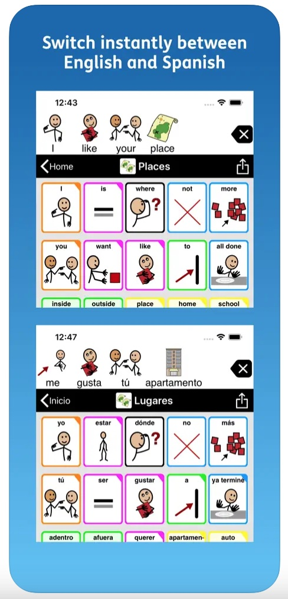
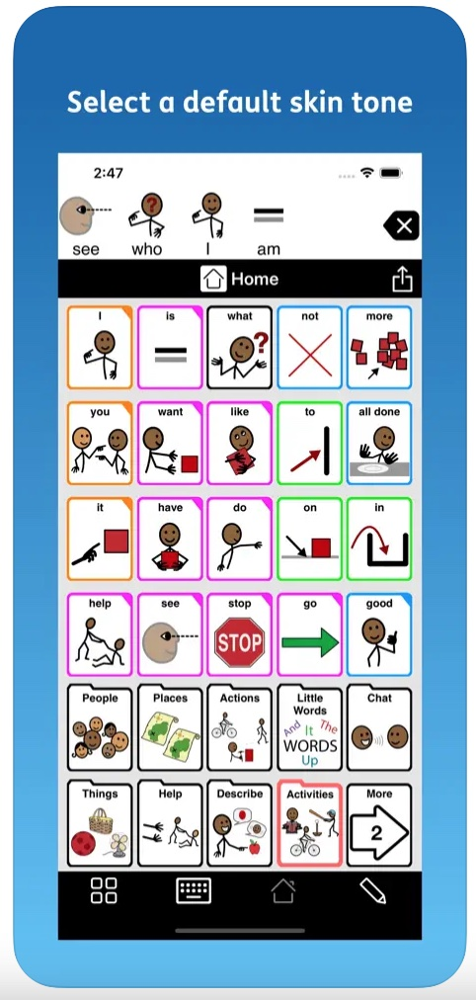

There are a variety of devices and applications available for Augmented and Alternative Communication that are specifically designed for a multitude of needs. Below is an overview of two tools which help people effectively communicate.
    Roloquo2Go: Communication iOS application compatible with the iPhone, iPad, and Apple Watch. It is a symbol-based AAC application that is completely customizable, allowing users to adjust it to their fine-motor skills as well as create folders for vocabulary themes. Users can add their own buttons for the most essential things that they say on a daily basis. In terms of how the speech sounds, there are over 100 text-to-speech voices to choose from (both adult and children) with natural tones. With 4.8 stars on the App Store and more than 7.2k ratings, people are extremely thankful for the way this app has changed their own lives and the lives of loved ones.


Tobii Dynavox I-series: Eye-gaze enabled speech generating device with the world’s leading eye tracker. This device is light and durable for daily usage. It has AAC software for communication, and uses speakers to play the audio of the voice. A unique feature is that it contains a ‘Partner Window’ which displays the text for the person across from the user. This ensures natural communication and understanding.